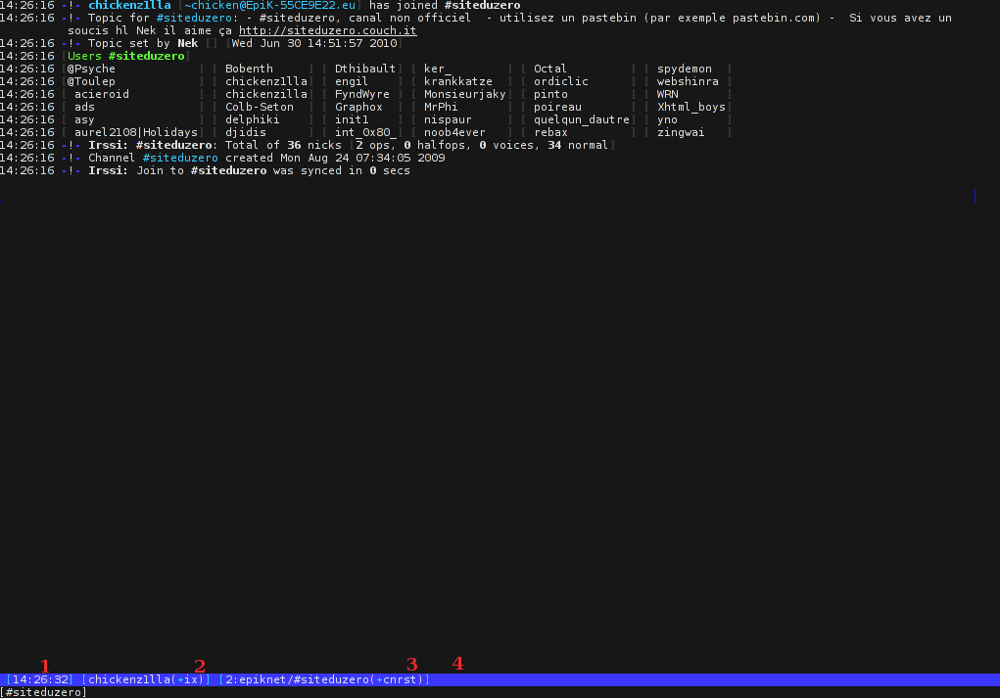
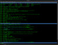
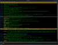

Irssi est un client IRC en mode texte, convivial et entièrement personnalisable.
Comment peut-on écrire « mode texte » et « convivial » dans la même phrase ?
Non, je ne suis pas un extrémiste qui veut imposer son système archaïque au monde entier. Malgré les préjugés que l'on pourrait avoir (si, vous en avez ;) ), Irssi est un bon exemple en faveur de la console. L'interface est très simple à prendre en main et vous disposez de raccourcis claviers intuitifs, qui vous évitent de jongler entre la souris et le clavier. Il est facile à utiliser et à configurer, mis à jour en permanence, et vous trouverez sur le site officiel une jolie liste de thèmes et de scripts à ajouter. Il possède en plus une gestion des fenêtres et des notifications très efficaces.
Enfin, Irssi est disponible pour tous les systèmes UNIX et Windows. Que demander de plus ? :)
Pour commencer, il va falloir récupérer Irssi (eh oui) sur la page de téléchargement. Téléchargez les fichiers binaires pour votre système ou les sources.
Linux
Vous pouvez télécharger un paquetage pour votre distribution (la plupart des dépôts proposent Irssi), ou compiler depuis les sources :
#Télécharger et décompresser.
#Il va sans dire que vous devez adapter le nom du fichier en fonction de la version actuelle.
wget -O - http://www.irssi.org/files/irssi-0.8.12.tar.gz | tar xvzf -
cd irssi-0.8.12
#Compiler
./configure && make
#La commande suivante doit être exécutée en tant qu'administrateur
make install
Démarrez ensuite Irssi avec la commande irssi.
Windows
Sous Windows, décompressez le fichier irssi-win32-*.exe et démarrez irssi.cmd. Pour ceux qui n'ont peur de rien, :pirate: vous pouvez aussi compiler l'application vous-mêmes en suivant les instructions du fichier README.
Mac OS
Pour Mac, je ne connais absolument pas et ne peux, par conséquent, pas vous aider. :( Apparemment il faut installer fink, un logiciel pour porter des applications Unix sur Mac. Les instructions sont disponibles sur le site. J'espère que vous saurez vous débrouiller.
Lorsque vous lancez le logiciel, il s'affiche uniquement l'heure et quelques crochets qui ne sont pas du meilleur effet.
Configuration
Toute la configuration de Irssi peut se faire dans le logiciel lui-même, pas besoin de modifier un quelconque fichier de configuration (du moins pas si vous ne voulez pas). Il suffit de taper la commande /set. Vous devriez obtenir une liste exhaustive de toutes les options de configuration. Ne fuyez pas, on ne les détaillera pas toutes... :) Avant d'aller débattre des avantages de Linux par rapport à Windows sur #troll, :-° il vous faut préparer le terrain.
Définissez d'abord votre pseudo par défaut :
/set nick mon_pseudo
puis votre pseudo alternatif, si celui-ci est déjà utilisé :
/set alternate_nick pseudo_alternatif
Ensuite, votre nom réel, qui apparaîtra lorsqu'un utilisateur tapera la commande /whois :
/set real_name nom
Votre nom d'utilisateur est défini par défaut comme celui que vous utilisez sur votre système. Il peut être judicieux de le changer.
/set user_name nom_utilisateur
Le message qui s'affiche lorsque vous quittez un serveur :
/set quit_message Bon c'est pas tout ça mais j'ai du boulot, moi.
La même chose pour un canal :
/set part_message Essayez Irssi, le client irc qu'il est bien
Pour l'instant, cela suffira. Enregistrez vos paramètres avec la commande /save, puis relancez Irssi (avec /quit).
Utilisation basique
Connectons-nous
À partir de là, votre client est fonctionnel. Nous allons maintenant nous connecter au canal non officiel du Site du Zéro. La connexion à un serveur se fait par la commande :
/connect irc.epiknet.org
puis on joint le canal par un simple
/join #siteduzero
Décortiquons la fenêtre qui s'affiche :

Voilà, en théorie, l'écran que vous voyez, revu et corrigé par mes talents de graphiste. :soleil:
Ça, c'est l'heure. Je ne pense pas que nous ayons besoin de nous y attarder.
Ici s'affiche votre pseudo, choisi précédemment avec la commande /set nick que vous pouvez modifier temporairement avec la commande /nick.
Le 2 représente la fenêtre active (nous verrons les fenêtres après), Epiknet est le serveur (qui ne s'affiche que si vous êtes connectés à plusieurs serveurs) et #siteduzero, c'est le canal.
Ici, vous verrez [Act: ...] uniquement lorsqu'il y aura de l'activité dans une autre fenêtre. Un message du serveur ou du client sera peu mis en valeur (si vous tapez /help depuis #siteduzero, par exemple), par rapport à un message d'une personne ou un message contenant votre pseudo.
Jouons avec les fenêtres :magicien:
Pour se déplacer dans les fenêtres, c'est très simple : il suffit d'utiliser la touche [ECHAP] suivie du numéro de la fenêtre. On peut aussi utiliser [ECHAP] suivie des flèches droite ou gauche (ou [Ctrl] + N (comme Next) et [Ctrl] + P (comme Previous)).
Si vous êtes dans la deuxième fenêtre et que vous voulez, par exemple, visualiser en même temps la première, tapez
/window show 1
Ce qui splittera votre écran. Nous appellerons conteneurs les deux parties qui sont apparues, et fenêtres les écrans qui contiennent les canaux, conversations privées et messages du serveur. Chaque conteneur contient une fenêtre. Normalement, Irssi définit par défaut l'option autostick_split_windows à ON. Vous pouvez vérifier avec /set autostick_split_windows. Si elle est à ON, fixez-la à OFF, ce sera plus simple à expliquer. Si vous avez plus de deux fenêtres ouvertes, vous remarquerez que le changement entre les différentes fenêtres avec [CONTROL] + droite / gauche est quelque peu chaotique. On peut arranger ça en "collant" la fenêtre au conteneur. Ainsi, les changements de fenêtre se feront uniquement dans l'autre conteneur. Le mieux est encore un exemple :  Mon option autostick_split_windows est à OFF. Ici, j'étais dans la fenêtre 2 (celle qui contient FREENODE/#Ubuntu-fr) et j'ai fait un /window show 3. Si je veux voir la fenêtre 1 ([ECHAP] + 1), je l'afficherai dans le conteneur ayant le focus, c'est-à-dire celui du haut. Si, au contraire, je change le focus au conteneur du bas ([ECHAP] + 2), puis demande d'afficher la fenêtre 1, il l'affichera en bas. Vous suivez ? o_O Bon. Ce mode de déplacement pouvant prêter à confusion, il peut être préférable de «coller» la fenêtre au conteneur en faisant /window stick # on, où # représente le numéro de la fenêtre (la fenêtre à coller doit être dans le conteneur qui a le focus, sinon vous la collez dans ce conteneur, ce qui aura pour effet de supprimer l'autre). C'est simple, non ? ^^
Dans les versions récentes de Irssi, autostick_split_windows est à ON par défaut, ce qui signifie qu'une nouvelle fenêtre est automatiquement collée au conteneur, ce qui est tout de même plus pratique.
La gestion des fenêtres
Voici un petit tableau récapitulatif des commandes utiles :
Commande
Description
/window show #
Crée un nouveau conteneur et place la fenêtre numéro # dedans. Vous ne pouvez pas faire cela avec une fenêtre collée
/window hide #
Cache une fenêtre
/window move up
Déplace la fenêtre active vers le haut
/window move down
Déplace la fenêtre active vers le bas
/window move right
Déplace la fenêtre active vers la droite (change la numérotation)
/window move left
Déplace la fenêtre active vers la gauche
/window stick # ON/OFF
Colle la fenêtre # au conteneur actif. Si ON/OFF n'est pas spécifié, Irssi comprend ON
/window grow #
Agrandit le conteneur actif de # lignes. Si # n'est pas spécifié, ce sera une ligne
/window shrink #
Réduit le conteneur actif de # lignes
/window balance
Répartit équitablement les conteneurs
/window size #
Fixe la taille du conteneur à # lignes
/window close
Ferme la fenêtre. C'est utile lorsque vous vous êtes déconnectés d'un serveur et qu'un simple /part ne suffit pas
/window new split
Crée une nouvelle fenêtre en splittant l'écran
Automatisons
Ce serait une aberration de devoir à chaque fois taper les commandes pour se connecter à un serveur puis à des canaux, surtout que l'ordinateur est justement là pour automatiser des tâches. IRC est composé de réseaux de serveurs, qui sont composés de multitudes de canaux chacun. Si vous êtes connectés à plusieurs serveurs, comment savoir si la commande /join #france est destinée à irc.serveur1.net ou à irc.serveur2.org ? Nous allons d'abord définir des réseaux de serveurs avec la commande /network.
Cette commande ajoute un réseau de serveurs appelé FREENODE où votre nick sera "Bobby", votre nom d'utilisateur "Jules", et qui écrira automatiquement les commandes :
/msg NickServ identify *****
/unquery Nickserv
Les options -nick et -user ne sont utiles que si vous ne désirez pas utiliser la configuration par défaut (créée avec la commande /set).
Pour l'instant, il ne se passera rien si vous redémarrez Irssi : il faut ajouter un ou plusieurs serveurs au réseau.
Ici, nous avons ajouté trois serveurs au réseau FREENODE (j'ai sélectionné les serveurs les plus proches géographiquement). L'attribut -auto signifie qu'on se connectera automatiquement au premier des trois. Bien. Ajoutons maintenant quelques canaux.
Il n'est pas utile de le modifier manuellement : tous les changements peuvent se faire depuis Irssi ! Néanmoins, si vous souhaitez un affichage plus clair des options disponibles, vous pouvez y jeter un coup d'oeil. Il est divisé en listes de listes d'items.
Il y a la liste servers, que nous avons modifiée avec la commande /server ;
la liste chatnet correspond à /network ;
channels à /channel ;
la partie aliases est modifiée avec /alias. Les alias sont en fait des raccourcis vers de longues commandes. Vous pouvez en définir vous-mêmes : /alias CEPIK connect irc.epiknet.org 6667. Il y en a déjà quelques-unes définies par défaut (et même une pour calculer !) ;
la partie statusbar s'occupe de l'affichage des différentes barres de statut. Nous ne l'examinerons pas en détail mais elle est normalement assez bien commentée et vous pouvez vous y attaquer si vous comprenez l'anglais. La configuration depuis Irssi avec la commande éponyme (= du même nom) est tout de même plus simple ;
la partie settings contient toutes les options modifiées avec /set ;
il peut y avoir d'autres parties, par exemple keyboard qui peut être modifiée avec la commande /bind, qui permet de définir des raccourcis claviers : /bind meta-c /clear. Le texte contenu par la fenêtre en cours sera effacé lorsque vous appuierez sur [Alt] + c.
Ajouter un thème
Le thème par défaut n'étant pas forcément ce qui se fait de plus beau, on peut facilement le changer. Pour choisir le style qui vous va bien, vous n'avez que l'embarras du choix. Si vous êtes indécis, je vous propose le thème clean, qui est particulièrement soigné au niveau des couleurs (c'est totalement subjectif, bien entendu). Enregistrez-le dans votre répertoire ~/.irssi/ et, dans Irssi, tapez simplement (vous avez téléchargé un fichier nomDuTheme.theme) :
/set theme nomDuTheme
On ne peut faire plus simple.
Ajouter un script
Cette fois, ce n'est pas beaucoup plus compliqué : il faut créer un dossier scripts dans votre ~/.irssi/ puis y placer le script, le tout suivi d'un /load script.pl. :waw: Les scripts pour Irssi sont écrits en Perl et contiennent généralement un mode d'emploi en anglais. Nous allons nous faire les dents en installant un script qui compte les utilisateurs présents sur le canal. Installez usercount.pl, puis ajoutez-le à la barre avec un /statusbar window add usercount.
Par défaut, usercount affiche le total des pseudos, suivi des détails comprenant les opérateurs (avec un @), les demi-opérateurs (avec un %), les voices (avec un +) et les utilisateurs normaux (voir ici pour le lexique). Vous pouvez changer quelques options :
/set usercount_show_zero ON/OFF affiche ou non les catégories décrites ci-dessus lorsqu'elles sont vides ; /set usercount_show_ircops ON/OFF affiche ou non les opérateurs IRC ; /set usercount_show_halfops ON/OFF affiche ou non les demis-opérateurs.
Dans votre fichier de configuration, dans la partie statusbar/window/items/usercount, vous pouvez mettre alignment = "right";, ce qui alignera usercount à droite. Le reste de la configuration se fait dans le fichier *.theme. Voici la configuration par défaut : sb_usercount = "{sb %_$0%_ nicks ($1-)}"; sb_uc_ircops = "%_*%_$*"; sb_uc_ops = "%_@%_$*"; sb_uc_halfops = "%_%%%_$*"; sb_uc_voices = "%_+%_$*"; sb_uc_normal = "$*"; sb_uc_space = " ";
Examinons par exemple sb_uc_ops, la variable de mise en forme des opérateurs. Le premier «%_» signifie simplement «mettre en gras», le «@» affiche «@», le second «%_» enlève la mise en gras et le «$*» affiche la valeur de la variable (ici) ops. C'est simplissime, non ? Le code couleur est disponible ici. Copiez sb_usercount = "..." et la / les variable(s) à modifier dans la partie abstracts de votre fichier *.theme, puis faites un /reload dans Irssi, qui rechargera toute la configuration. Suggestion de présentation : :-°
Tout le fichier configuration est défini ainsi. Il est donc aisément paramétrable.
Je vous ai montré là un exemple de toute la configuration possible pour un si petit script (si vous connaissez un peu le Perl, vous pouvez l'examiner en détail : il n'est pas très compliqué). Avec Irssi, vous pouvez créer facilement votre propre thème, modifier tous les paramètres possibles et ajouter des fonctionnalités.
Vous en voulez plus ?
/set timestamp_format %H:%M:%S permet d'afficher les secondes dans les conversations.
/set autolog ON va créer des fichiers contenant toutes vos conversations dans le répertoire défini par l'option autolog_path (par défaut, c'est ~/irclogs/$tag/$0.log ; $tag représente le réseau et $0 le canal). L'aspect de ces logs est configurable grâce à log_open_string, log_close_string, log_timestamp (par exemple : %d/%m/%Y %H:%M:%S ; n'oubliez pas l'espace à la fin). Pensez à faire le ménage de temps en temps : ces fichiers peuvent rapidement devenir très gros.
Pour une gestion encore plus simple du changement de fenêtres, ajoutez simplement ceci à la fin de votre fichier config. Vous pourrez désormais utiliser les touches F1 à F12 pour naviguer (attention : F1 est généralement déjà utilisé par le terminal pour afficher l'aide).
Pour avoir une notification graphique lorsqu'on vous envoie un message, il existe le script irssi-libnotify. Il faut avoir installé libnotify-bin sur votre machine. Encore une fois, pour voir les options disponibles tapez /set notify.
Si vous ne souhaitez pas voir les notifications d'activité pour les /part, /join... entrez cette commande : /set activity_hide_level parts joins quits nicks modes.
Et cætera, et cætera. :)
Voici un exemple de ce qu'on peut obtenir en bidouillant légèrement le fichier thème :  Après, c'est une affaire de goût (vous n'êtes pas obligés d'ajouter des canards \_O< ).
Qu'il est ardu de faire un quiz difficile pour un logiciel aussi simple d'utilisation. :ange: Je vous conseille de coupler Irssi avec GNU Screen, vous pourrez ainsi l'utiliser depuis n'importe quel ordinateur. Chez vous, faites un :
screen irssi
Puis, à un autre endroit (pas au travail, tout de même :-° ), connectez-vous à votre machine personnelle avec OpenSSH ou PuTTY et récupérez la session screen avec :
screen -rD
Vous utilisez maintenant Irssi comme si vous étiez chez vous. :magicien: Du côté des magies de l'Internet, il existe un service nommé BitlBee qui permet d'utiliser plusieurs protocoles (comme Jabber, MSN, Yahoo...) par l'intermédiaire d'IRC. Ça n'a pas vraiment de rapport avec le tutoriel mais je pense que ça mérite d'être souligné.
Il ne vous reste plus qu'à écrire un script pour faire le café et Irssi sera complet. :)
{kind=link}
{kind=link}
{kind=link}